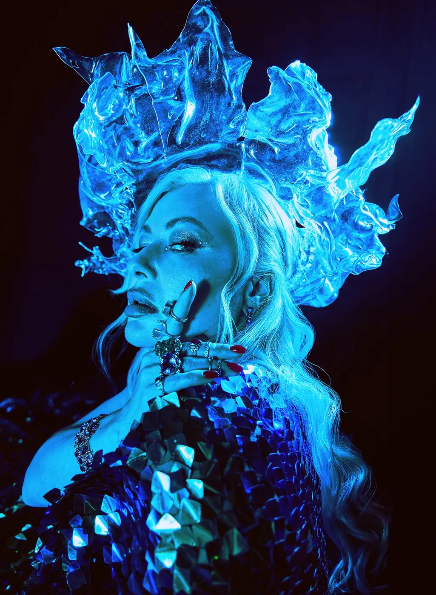
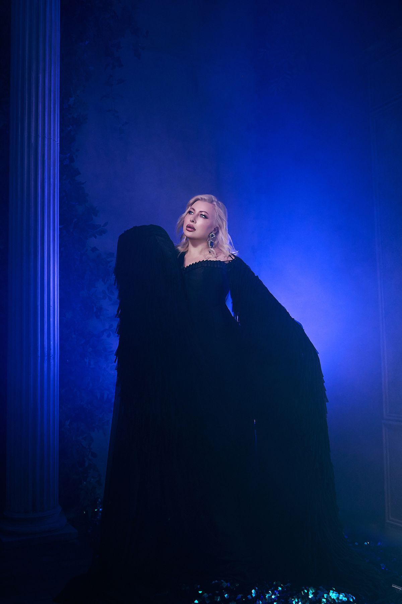
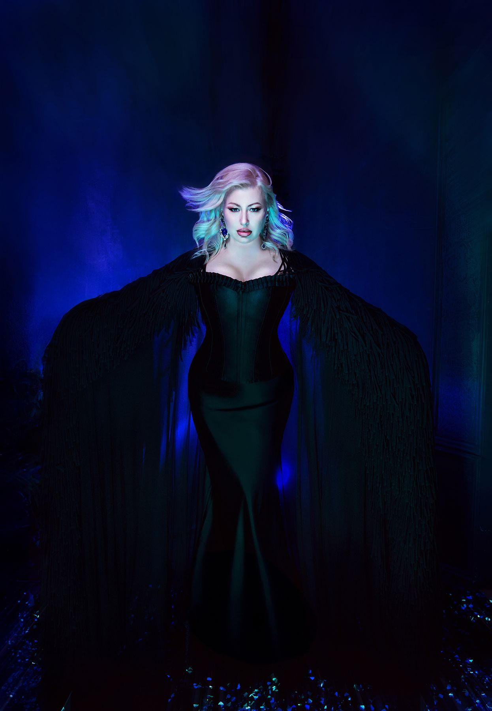

Images for the singer NOLA: black wings of fringe in blue haze, a lace veil in red smoke, a white angel inside a crystal chandelier and an ice queen crowned with frozen water in a sea of sequins.


I shoot artists for covers, posters and press.
Working worldwide, remotely. Invoicing in USD or EUR.